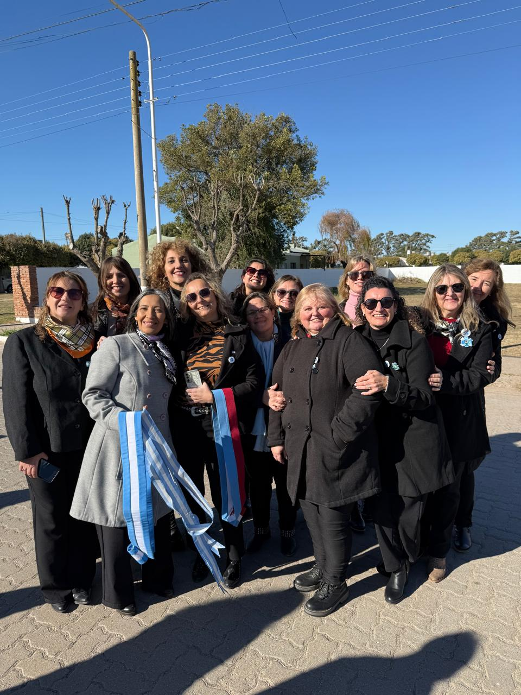
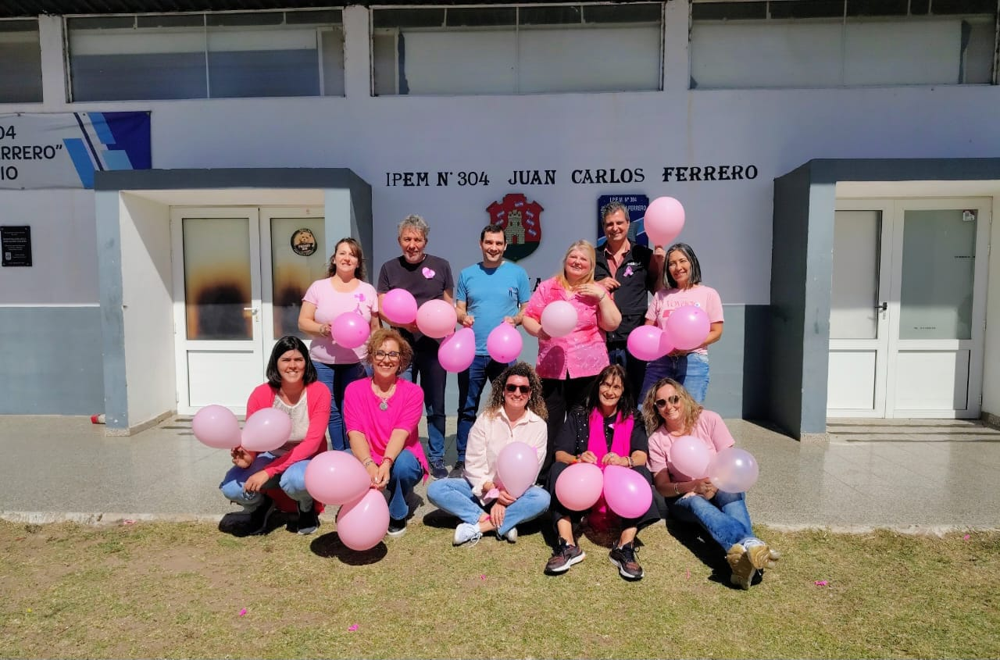
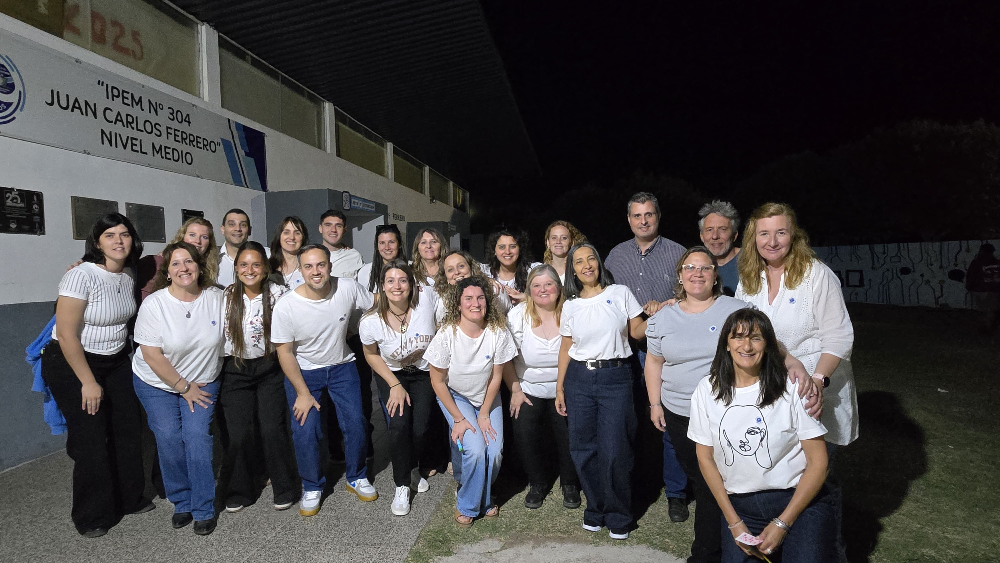
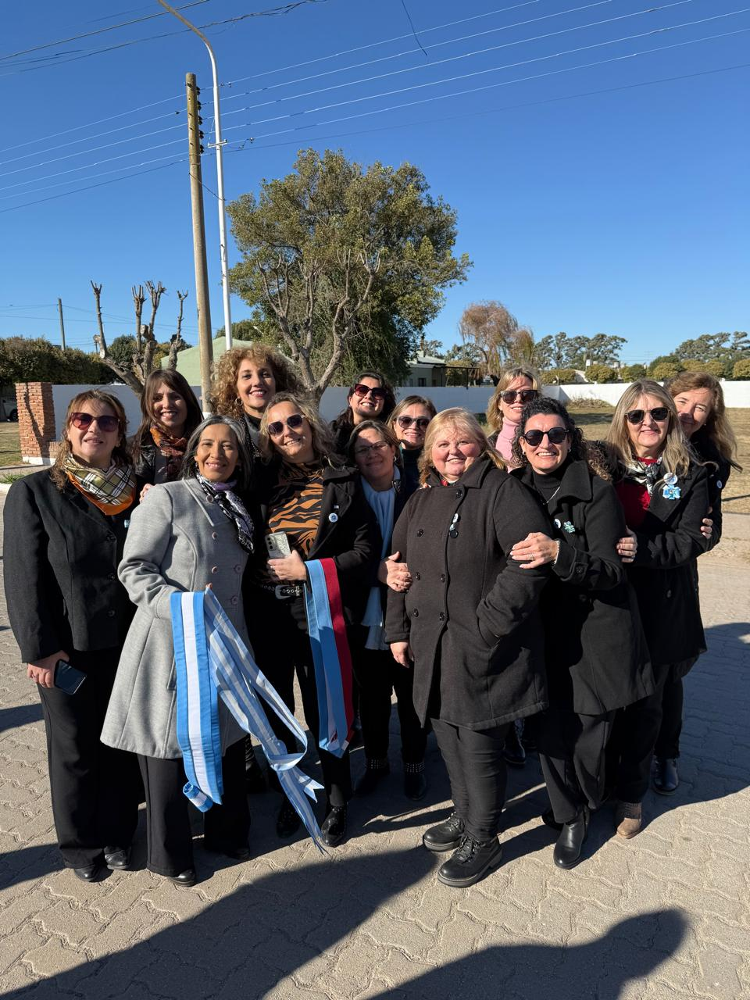
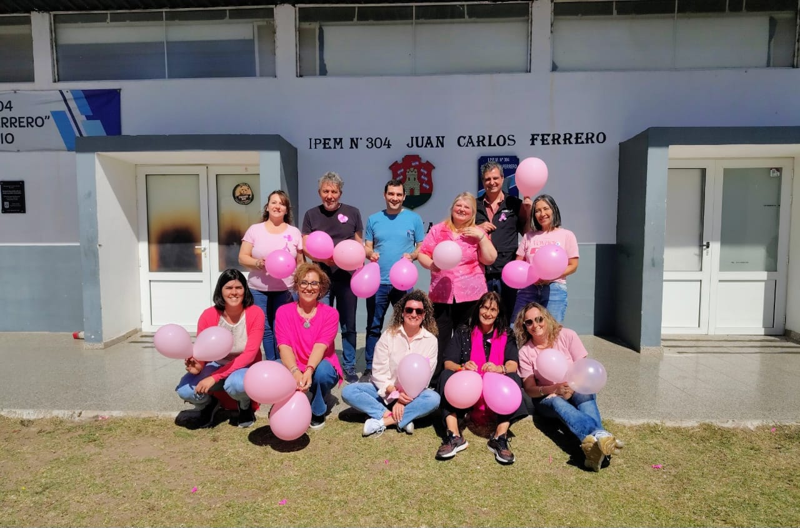
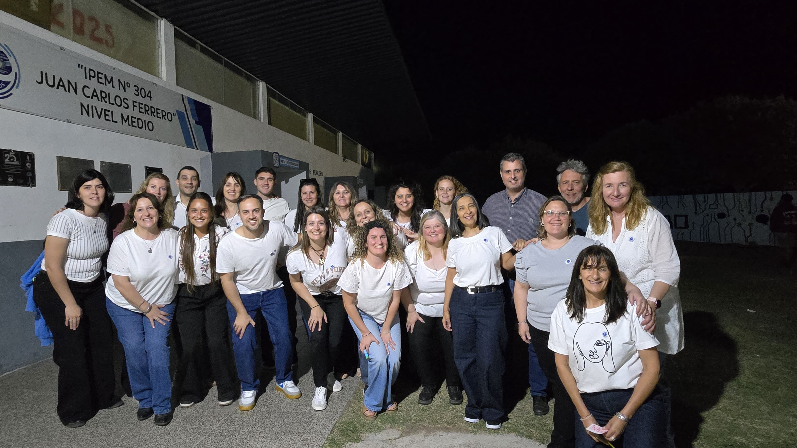

¿Quienes Somos?
El IPEM 304 “Juan Carlos Ferrero” es una institución educativa pública de la localidad de Colonia Almada, comprometida con la formación integral de adolescentes y jóvenes. Nuestro proyecto escolar se basa en el acompañamiento, la inclusión y el desarrollo de capacidades para la vida, entendiendo la educación como un proceso continuo que abre puertas y amplía horizontes.
La escuela trabaja para ofrecer un espacio donde cada estudiante pueda descubrir sus intereses, fortalecer sus habilidades y construir un proyecto personal con sentido. Promovemos una enseñanza que combina contenidos académicos, experiencias significativas y valores que hacen posible la convivencia, el respeto y el trabajo conjunto.
A lo largo de los años, la institución ha crecido gracias al compromiso de docentes, familias y estudiantes que día a día sostienen una comunidad educativa activa y solidaria. Desde las aulas hasta los proyectos institucionales, las propuestas buscan despertar la curiosidad, fomentar la creatividad y brindar herramientas que permitan enfrentar los desafíos del mundo actual.
Nuestro objetivo es formar jóvenes capaces de pensar críticamente, participar en su comunidad y proyectarse hacia el futuro con confianza, autonomía y responsabilidad.
Identidad y Recorrido
El colegio posee una trayectoria de varias décadas en la comunidad, acompañando la formación de generaciones de estudiantes que hoy participan activamente en distintos ámbitos profesionales, productivos y sociales de la región. Con el paso del tiempo, la institución ha crecido en matrícula, en propuestas pedagógicas y en proyectos que fortalecen el vínculo con la comunidad, consolidando su papel como espacio de aprendizaje, encuentro y desarrollo.
Nuestra Misión
Brindar una educación de calidad que permita a cada estudiante desarrollar pensamiento crítico, fortalecer sus habilidades sociales, adquirir competencias científicas y construir las herramientas necesarias para continuar estudios superiores o incorporarse al mundo laboral de manera autónoma y responsable.
Nuestro Equipo
El colegio cuenta con un equipo humano diverso y comprometido, integrado por docentes, directivos y preceptores que trabajan día a día para acompañar las trayectorias escolares y el bienestar integral de cada estudiante. Esta comunidad educativa se conforma por:
- Equipo directivo
- Profesores de todas las áreas
- Preceptores y tutores
- Personal administrativo y de maestranza
Equipo Docente
 




